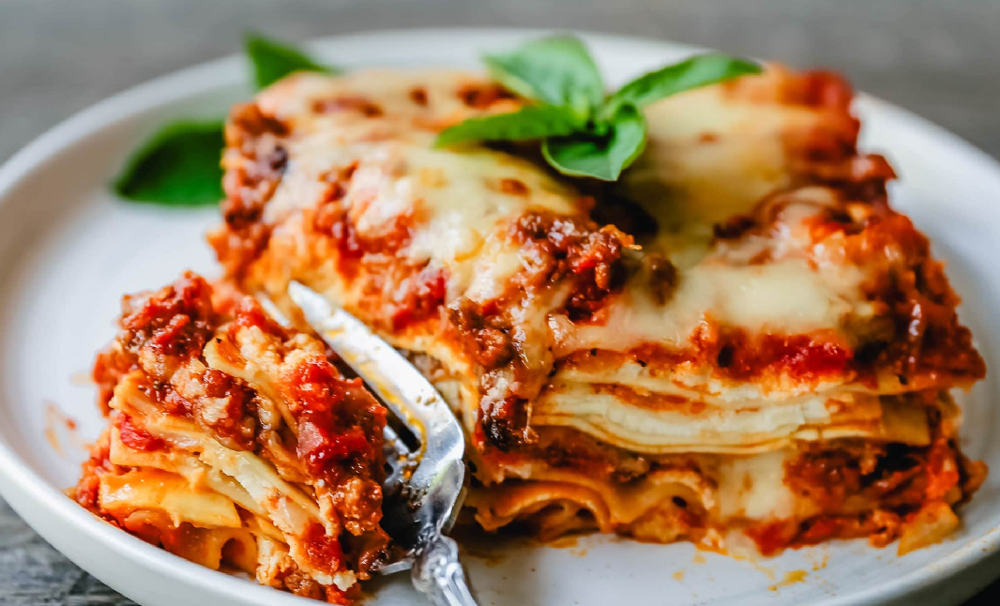

Recette de lasagne

Si vous aimez les bonnes lasagnes qui goute comme chez Moman, cette lasagne est fait pour vous
Avant de débuter la recette, il sera bien d'avoir les ingrédients ci-dessous
Cette recette de lasagne italienne est bon pour 4-6 personnes.
ingrédients
- Pasta dental
- 1 canne de sauce tomate
- 1 gousse Basilic
- 500g de viande hache
- 250g de fromage rape
- Huile d'olive
- Sel et poivre
Etapes
- Faire cuire la pasta dental dans l'eau bouillante
- Pendant ce temps, faire cuire la viande hache dans une poile et huile d'olive chaude
- Lorsque cuit, ajoutez la sauce tomate
- Rapez le fromage et laissez de cote
- Une fois ces etapes ci-dessus complete, mettre dans un plat, la pasta, la viande, et la sauce en etage
- Appliquer le fromage
- Soupoudrez de basilic du sel et du poivre
- Bon Apetit